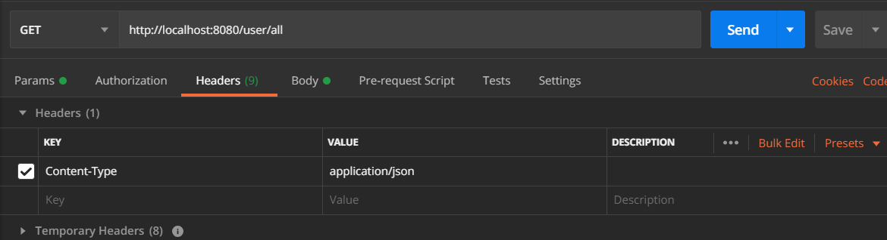

1.定义
REST是REpresentational State Transfer的首字母缩写，通常中文翻译为表征性状态转移，是一种分布式超媒体系统的架构风格，是由 Roy Fielding 在2000年提出的概念。REST指定了关于系统组织的一些约束条件和原则，REST本身并没有创造什么新的技术或者组件，一个系统如果满足了REST中的约束和设计原则，我们就可以称这个系统的RESTful的。虽然说REST这个理念对于任意一个系统都适用，但是目前，遵循REST原则的HTTP应用就是最好的实例。
2.注意点
具体的REST理论也比较多，基于我现有的理解，我认为，其中最关键的就是两点：
- 规范了资源的表述接口（用统一格式的URI来表述）以及相关的动作使用使用；
REST原则纠正了当前很多应用的误区，特别是HTTP应用。原来，包括现在，很多系统都会这样设计：比方说，有一个添加用户的功能，于是将路由定义成/user/add，然后这个路由对应的是一个post方法；如果是要获取某个用户的信息，路由又定义成了/get_user，服务器通过HTTP协议把数据送给客户端，但其实不应该是这样的。而是应该把路由定义成关于用户的URI，例如v1/user/id/25,即路由中应该由一系列的名词组成，而具体是执行什么操作，再调用相关的动作即可。
- 严格将C/S分开，服务器只负责传数据，具体的渲染和交互交给客户端，一定程度上也减少了服务端的压力。
服务端和客户端用JSON或XML来交互数据。
3.HTTP动作规范
RESTful的HTTP应用必须正确地使用HTTP动作，原来的很多应用，几乎只会用到GET和POST方法，比如说，要删除一个资源怎么办？原来一种不是那么正确的设计方式是，定义一个GET方法的路由/delet_user，再说一遍，不应该是这样的！你应该定义一个v1/user/id/25的路由，并执行DELETE动作。
REST中规范的HTTP动词和其对应的作用如下所示：
| HTTP动词 | 作用 |
|---|---|
| GET | 客户端请求获得一个资源的数据 |
| POST | 客户端发送数据给服务端，新建一个资源 |
| PUT | 客户端发送数据给服务端，修改已有资源的数据(必须提供该资源的所有数据) |
| PATCH | 客户端发送数据给服务端，修改已有资源的数据(可以只提供该资源的部分数据) |
| DELETE | 客户端删除某个资源 |
主要注意一下PUT和PATCH的区别，比方说，数据库中用id和姓名两个字段来表示一个用户，如果要用PUT动词来修改某个用户的数据，那么客户顿必须把这两个字段全发送给服务端，无论客户端到底是想修改一个字段还是两个；而如果使用PATCH动词，那只要发送部分想要修改的字段即可。
4.实践
4.1新建项目
这里我们用Spring Boot来实践一下，首先当然是创建一个Spring Boot项目了，新建好的项目组织如下：
因为项目比较小，这里我就没创建service层了。
4.2定义domain层类
这里我们就用User类来实践一下，代码如下：1
2
3
4
5
6
7
8
9
10
11
12
13
14
15
16
17
18
19
20
21
22
23
24
25
26
27
28
29
30
31
32
33package com.liuzhian.springbootrestdemo.domain;
import lombok.AllArgsConstructor;
import lombok.Data;
import lombok.NoArgsConstructor;
import javax.persistence.Entity;
import javax.persistence.GeneratedValue;
import javax.persistence.GenerationType;
import javax.persistence.Id;
/**
* @ClassName User
* @Deacription // TODO
* @Author LiuZhian
* @Date 2020-03-10 14:55
* @Version 1.0
**/
public class User {
(strategy = GenerationType.IDENTITY)
private Integer id;
private String name;
private String password;
}
注意一下，@Data、@AllArgsConstructor、@NoArgsConstructor注解是用了lombok包，添加了@Data注解后可以自动生成get/set方法，@AllArgsConstructor、@NoArgsConstructor注解则分别是生成所有参数的构造函数和无参构造函数。
4.3数据库建表
数据库表就定义了3个字段，分别是id，name和password，如下：
4.4定义DAO层
DAO层主要就是为了访问数据库数据了，Spring中的JPA也非常好用，我们只要定义一个访问数据接口UserRepository，并继承JpaRepository接口就可以了，这个接口里面会帮我们自动实现一些基本的CRUD方法：1
2
3
4
5
6
7
8
9
10
11
12
13
14
15
16
17package com.liuzhian.springbootrestdemo.dao;
import com.liuzhian.springbootrestdemo.domain.User;
import org.springframework.data.jpa.repository.JpaRepository;
/**
* @ClassName UserRepository
* @Deacription // TODO
* @Author LiuZhian
* @Date 2020-03-10 14:58
* @Version 1.0
**/
public interface UserRepository extends JpaRepository<User, Integer> {
User findByName(String name);
}
如果我们要自定义一些访问数据库的方法，我们也可以类似上述的findByName()方法定义出来，记住，方法名一定要遵循一定的原则,具体的可以去搜使用文档。
定义好了接口之后，也别忘了在项目的application.yml文件中配置好数据库的一些properties，我的配置如下：1
2
3
4
5
6
7
8
9
10
11spring:
# 数据库配置
datasource:
url: jdbc:mysql://localhost:3306/test?serverTimezone=Asia/Shanghai
username: root
password: root
driver-class-name: com.mysql.cj.jdbc.Driver
#热部署生效
devtools:
restart.enabled: true
4.5定义Controller
最后当然是定义控制器了，按照REST中的资源表示原则和动词使用原则，我定义了下面的UserController类:1
2
3
4
5
6
7
8
9
10
11
12
13
14
15
16
17
18
19
20
21
22
23
24
25
26
27
28
29
30
31
32
33
34
35
36
37
38
39
40
41
42
43
44
45
46
47
48
49
50
51
52
53
54
55
56
57
58
59
60
61
62
63
64
65
66
67
68
69
70
71
72
73
74
75
76
77
78
79
80
81
82
83
84
85
86
87
88
89
90
91
92
93
94
95
96
97
98
99
100
101
102
103
104
105
106
107
108
109
110
111
112
113
114
115
116
117
118
119
120
121
122
123
124
125
126
127
128
129
130
131
132
133
134
135
136
137package com.liuzhian.springbootrestdemo.controller;
import com.liuzhian.springbootrestdemo.dao.UserRepository;
import com.liuzhian.springbootrestdemo.domain.User;
import org.springframework.beans.factory.annotation.Autowired;
import org.springframework.dao.EmptyResultDataAccessException;
import org.springframework.http.HttpStatus;
import org.springframework.http.ResponseEntity;
import org.springframework.web.bind.annotation.*;
import java.util.Collection;
import java.util.Optional;
/**
* @ClassName UserController
* @Deacription // TODO
* @Author LiuZhian
* @Date 2020-03-10 15:10
* @Version 1.0
**/
(path = "/user", produces = {"application/json", "text/xml"})
public class UserController {
private UserRepository userRepo;
(path = "/test")
public User testUser() {
return new User(1, "andy", "123456");
}
/**
* 返回所有User对象
*
* @return
*/
(path = "/all")
public Collection<User> allUsers() {
return userRepo.findAll();
}
/**
* 根据id得到User对象
*
* @param id
* @return 不存在返回404
*/
(path = "/id/{id}")
public ResponseEntity<User> userByName(@PathVariable("id") Integer id) {
Optional<User> optUser = userRepo.findById(id);
if (optUser.isPresent()) {
return new ResponseEntity<>(optUser.get(), HttpStatus.OK);
}
return new ResponseEntity<>(null, HttpStatus.NOT_FOUND);
}
/**
* 根据name得到User对象
*
* @param name
* @return 不存在返回404
*/
(path = "/name/{name}")
public ResponseEntity<User> userByName(@PathVariable("name") String name) {
User user = userRepo.findByName(name);
if (user != null) {
return new ResponseEntity<>(user, HttpStatus.OK);
}
return new ResponseEntity<>(null, HttpStatus.NOT_FOUND);
}
/**
* POST 创建一个新的User 对象
* @param user
* @return
*/
(consumes = "application/json")
// 成功返回201 - created, 比200更好
(value = HttpStatus.CREATED)
public User postUser(@RequestBody User user) {
return userRepo.save(user);
}
/**
* PUT 更新User
* @param user
* @return
*/
(path = "/id/{id}")
public User putUser(@RequestBody User user) {
return userRepo.save(user);
}
/**
* Patch 方法更新对象
*
* @param id User id
* @param patch 更新后的对象
* @return 成功返回200，不存在id对应的对象则返回404
*/
(path = "/id/{id}", consumes = "application/json")
public ResponseEntity<User> patchUser(@PathVariable("id") Integer id,
@RequestBody User patch) {
Optional<User> userOpt = userRepo.findById(id);
if (userOpt.isPresent()) {
User u = userOpt.get();
if (patch.getName() != null)
u.setName(patch.getName());
if (patch.getPassword() != null)
u.setPassword(patch.getPassword());
return new ResponseEntity<>(userRepo.save(u), HttpStatus.OK);
}
return new ResponseEntity<>(null, HttpStatus.NOT_FOUND);
}
(path = "/id/{id}")
// 成功删除返回状态码 204
(value = HttpStatus.NO_CONTENT)
public void deleteUser(@PathVariable("id") Integer id) {
try {
userRepo.deleteById(id);
} catch (EmptyResultDataAccessException e) {
}
}
}
我想代码都比较清晰了，主要需要关注这么几个点：
- 用@Autowired把数据库访问bean注入进来；
- 用@ResponseStatus来修改动作执行成功后的返回状态码。比方说，POST成功后，应该返回201-CREATED来提示用户已经新建成功了，而不应该用200；DELETE成功后，返回204-NO_CONTENT来提示用户该资源删除成功，已经不存在了；
- 用ResponseEntity对象也同样可以管理返回的状态码。
4.6测试REST API
推荐一个好用的测试工具——Postman，该软件中可以完成大多数测试工作，无论是web应用还是app等。我们先把Conten-Type设置成application/json，主要是为了后面做准备，表示客户端以JSON的格式来发送数据给服务器，如下所示：

先测试一下GET方法，结果如下:
再测试一下POST方法，记得提前把Body设置为raw，并选择JSON格式，然后再写一个待创建的JSON数据：
然后测试一下PUT和PATCH，注意，PUT需要把所有字段全发给服务器，如下:
而PATCH只需要发送想要修改的字段，而没指定的字段保持之前的数据，如下：
最后的DELETE这里就不放图了。
5.后记
本文结合Spring Boot对REST API作了一次实践，模拟了HTTP中的GET/POST/PUT/PATCH/DELETE动作，我们可以对REST有个初步的感性认识。